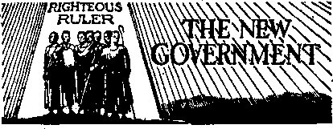
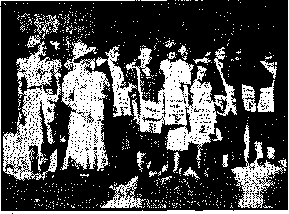
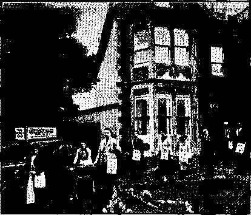
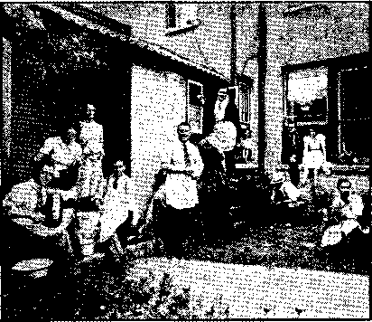
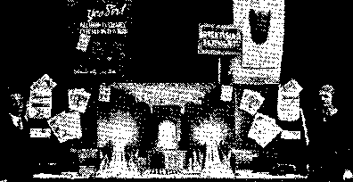

The “New Order” in Europe (Part 1)
New Government
, A “Flying Trip” to the Detroit Convention 12
Divine Protection of Literature
Counsel by J. F. Rutherford
The Reclamation of Crank-Case Oil
British Comment
Published every other Wednesday by
WATCHTOWER BIBLE AND TRACT SOCIETY, INC.
117 Adams St., Brooklyn. N. ¥., U. 8. A.
Editor Clayton J. Woodworth
Business Manager Nathan H. Knorr
Five Cents a Copy
?1 a year in the United States
$1.25 to Canada and ail other countries
NOTICE TO SUBSCRIBERS
Remittances: For your own safety, remit by postal or express money order. When coin or currency is lost in the ordinary mails, there is no redress. Remittances from countries other than those named below may be made to the Brooklyn office, but only by International postal money order,
Receipt of a new or renewal subscription will bo acknowledged only when requested. Notice of Expiration is sent with the journal one month before subscription expires. Please renew promptly to avoid loss of copies. Send change of address direct to us rather than to the post office. Tour request should reach us at least two weeks before the date of issue with which it is to taka effect. Send your old as well as the new address. Copies will not be forwarded by the post office to your new address unless extra postage is provided by you,' Published also in Afrikaans, Bohemian, Danish, Dutch, Finnish, French, German. Greek, Hungarian, Japanese, Norwegian, Folissh, Portuguese, Spanish, Swedish, Ukrainian; also special Australian edition 1b English.
OFFICES FOR OTHER COUNTRIES
England 34 Craven Terrace, London, W. 2
Canada 40 Irwin Avenue, Toronto 5, Ontario
Australia 7 Beresford Road, Strathfleld, N.S.W.
South Africa <623 Boston House, Cape Town
Bntered as second’dass matter at Brooklyn, under the Act of March 3, 1879,
No tan da
The “New Order” Hailed and Denied
♦ June 9, 1940, -the day before Mussolini-stabbed France in the back, the pope told the new French ambassador that after the war he anticipated “a restoration of a new Christian order”. July 8, 1940, his organ Osservatore Romano, stated that the principle of authority is higher than that of . the human will, thus endorsing Fascism and Nazism, endorsed Salazar’s regime in Portugal, stated that is the aspiration and program of the church, and then praised Marshal Petain, whose renovation of France along Fascist lines would be a dawn of-“a new radiant day, not only for France, but for all Europe and the world”.
November 10, 1940, the Jesuit priest L. O’Hea, in an address in Glasgow, reported in the London Catholic Universe, said that when the war is over “it will be a new world order, both at home and abroad, to which our principles must find their application”. O’Hea is principal of the Catholic Workers’ College at Oxford.
January 8, 1941, the Jesuit priest, J. Edward Coffey, professor of philosophy at St. Peter’s College, in an address at East Orange, N.J., spoke on the topic “Pope Pius XII and the New Order in Europe”. The Jesuits have been the advertisers of their proposed “new order” throughout the earth.
February 15, 1941, the Osservatore Romano, alarmed by the stubborn resistance of Britain and the Italian debacle in Africa, denied that the pope had said Europe must adjust itself to a new order, or that he was opposed to the democratic form of government, or that he had blessed the totalitarian troops of Italy, etc. That is Jesuitry.
Loyola, founder of the Jesuits, admitted that “the white that I see I would believe to be black, if the Hierarchical Church were so to rule it”. See in any dictionary or encyclopedia the terms Jesuit, Jesuitical, Jesuitism, Jesuitry.
- CONSOLATION
“And in His name shall the nations hope.”—Matthew 12:21, A.R.V.
Volume XXII u
Brooklyn1 N- Y,r Wednceday, April 2j 1941
Number 562
The “New Order” in Europe (In Four Parts—V’drt 1)
“Woe to the inhabiters of the earth, and of the sea! for the devil is come down unto you, having great wrath, because !he knoweth that he hath but a short time.” (Revelation 12:12) . . . Satan’s great wrath is directed against God and His organization. He therefore oppresses the people in divers and numerous ways and causes great sorrow’ and trouble to befall them and then induces his pious-faced and lying-lipped clergy to charge all these sorrows, woes and calamities up to Jehovah God. The reason is Io turn the people away from God before Armageddon is fought. Satan sees that his time is short, and his purpose and attempt to turn people away from God is to get all on his side. The proclamation of the voice from heaven at this point of the Revelation ends, which indicates that the woes of the peoples of the earth will continue and will reach a climax in Armageddon.—Light1 (Book One), page 245.
Von Papen, Papal chamberlain, expended millions of dollars to put Hitler the Gangster into pow’er in Germany; so confesses Thyssen, also a'millionaire, whose millions w?ere also used to the same end. The objective was to destroy the German Republic; the plan worked perfectly, The anticipated outcome was to be the “new’ order” .in Europe—the suppression of all liberty, the full establishment in pow’er of “The Abomination that Maketh Desolate” under the aegis of the Vatican. After making Hitler dictator of Germany von Pap-, en’s next job for the pope was the betrayal of the Austrian Republic, which also succeeded perfectly. At present he is German ambassador to Turkey. As soon as he had destroyed the German Republic, Hitler’s first achievement was to suppress the work of, Jehovah’s witnesses in Germany and put the witnesses themselves in concentration camps, Thus the Devil, the religionists, the politicians and the millionaires do teamwork together.
APRIL 2, 1941
On January 14, 1934, only a few months after the suppression of the work of Jehovah’s witnesses in Germany, and the seizure of their property, the abovenamed von Papen, in Hitler’s own newspaper, Der Voelkischer Beobgchter, made the observation, “The Third Reich is the first power that not only recognizes but puts into practice the high principles of the Papacy.” -
In May, 1937, an unnamed Nazi new?s-paper published a dispatch from Vienna occupying half of its front page, entitled “Catholic Europe Predicted”, and stated that the plans are in pamphlet form and in the possession of prominent Catholics. The Trinidad Guardian of May 7, 1937, contains the story, from Berlin, accredited to “Transocean”—evidently a new’s service of that name. What this Nazi paper mentioned is now a reality.
1940 (the 400th anniversary of the founding of the Order of Jesuits) was the year set for Papal domination of the earth; and there are those who think that if Britain had been invaded September 7-15 the job would have been fully completed by now. After the overrunning of Poland, Norway, Denmark, Austria, Czechoslovakia, the Netherlands, Luxemburg, Belgium and France, the s^tup looked so good to the pope that he bagan talking about the “new order” and the German bishops were sure it was at hand. Confidently they agreed that “the Catholic church in Germany is indebted to German troops for the victorious advance” without which “German Catholics could not have pursued so undisturbed and quietly their church work and ministerial offices”. The statement was agreed to unanimously by all the 48 German bishops. The record of the church approval of the Nazi regime in Germany is 100-percent perfect and complete.
British resistance prevented the prompt fulfillment of Papal hopes, so the formal statement of the 48 bishops was delayed until after the success of the big putsch; but in the meantime the Army bishop, speaking for the entire Hierarchy, issued a statement that “there is no doubt as to who is right in this war and as to whom God will help”. At this point, please read again the contents of the box at the head of this article: it helps to contrast the real God with the mimic god, the Devil, The god of this present evil world.’ (2 Corinthians 4: 4) The god of Bishop Rarkowski and of Hitler is the Evil One.
Cardinal Faulhaber, of Munich, backed up Rarkowski by publicly comparing the Nazi iron cross with the cross of Jesus as a symbol of reward. This is all regular, The United Press, in a dispatch from Rome, August 9, 1940, noted the accord “since the outbreak of the war last September, inasmuch as the Germans regard the Catholics as having well demonstrated their patriotism”.
The American Freeman makes a, con-4 ■ tinuous study of the attitude of the Catholic Press and sums up the principal Catholic papers as advocating: (1) that the United States should refuse aid to England because it wants totalitarianism to triumph, (2) that tills' refusal should be not only material and moral but military and naval, (3) that aid from Russia should be discouraged, (4) that British sea power must be destroyed, (5) that the Petain dictatorship for France be approved, (6) that dictatorship rule in Spain, Portugal and South America be encouraged. This summary is correct.
In the London Catholic Herald, May 3, 1940, just as one country after another was falling into the Pacelli-Hitler trap, Harry Tolfree made the very frank statement, “We must attempt to build within the ranks of the Catholic body groups of totalitarian Christians who will be the leaven penetrating the mass.” Leaven, it may be added, is often a symbol of corruption; so the iigure of speech was quite appropriate. Of similar import was the statement of Cardinal Hinsley at London that “it is only through Catholic truth that true and lasting peace amongst men can be'assured”. That is like saying that all must knuckle under to the pope and his Hitlers, Mussolinis, Francos and Salazars or there can be no peace. The Hierarchy’s idea of Catholic truth in Spain was. to put everything back in the hands of the nobles and the clergy and give the people nothing. There is the same Catholic truth in Hungary, where, of the 26 largest estates, 10 belong to Roman Catholic organizations and the common people arc desperately poor.
The Monitor claims that less than a month after France declared war on Germany French clerics and editors and publishers of French Catholic papers entered into a conspiracy in Alsace to surrender the Maginot line to the Germans and, in order to meet the emergency, “it ordered the complete evacuation of over
CONSOLATION; a million people. Literally the whole population of Alsace was forced to leave its homes for the interior of France, the province of Dordogne in the southwestern part of the republic/' But even this did not save the republic from its traitors.
When Marshal Petain was made dictator of unoccupied'France the Osser-vatore Romano, the Vatican’s own organ, lauded him and the “new order” to the skies, proclaiming that, as they expressed it, “the principle of authority is higher than the human will.” This is a plain statement that the Vatican is in favor of dictatorships. See Notanda on page 2.
Petain calls his dictatorship “Hierarchical”, which is what it is. The French “Messenger of the Sacred Heart” acknowledges this, holding that before France can achieve its national aims the people must be “re-Christianized by education and Catholic Action”. And that this has long been in mind is shown by the “Prelude to Catholic Action”, published in Melbourne in 1936 by the Australian Catholic Truth Society, in which occurs the outline of what was largely accomplished in 1940: “We shall need an all-embracing scheme eventually—specialist groups for each class of Catholic, young and old, town workers and country workers, boys and girls in schools and colleges. It is all working splendidly in , France and Holland, Belgium and Spain, Italy and Portugal ”
Swinging into line the London Catholic. Herald declared that “conditions in unoccupied France are such at the moment that Catholic Action can be pushed forward intensively in response to the watchword of its leaders, 'Go ahead more than ever.’” About the same time, at New Orleans, Louisiana, “Reverend” Daniel A. Lord, Jesuit, made the boast that “Catholics are in a better position now than at any time since the Reformation”. It must be conceded that the world was never in a worse.condition.
At Vichy, January 14,1941, the United Press was handed official propaganda by
APRIL 2. 1941 :;
the Petain government of which it said, “It definitely cast France on the side of Italy, Spain and Portugal as against Britain.” The idea back of this is that the big-money and big-religion crowd .would have everything. At this point it may be explained that one of France’s curses has been the von Wendel or De Wendel family. The name of the family is changed as the boundaries change between France and Germany, but the’ family itself, wealthy beyond the dreams of avarice, thinks only in terms of money. From declaration of war, September,. 1939, to April, 1940, von Wendel or De Wendel shipped 200,000 to 300,000 tons of iron ore into Germany every month. He wanted Germany to have the ore, so it could fulfill the Hierarchy’s desires as to France. He, and others like him, saw to it that when the war came into France the heavy artillery stood idle in French railroad yards. Moreover, the common soldiers of France knew that they were double-crossed by Pacelli officers, many of whom deliberately deserted their commands at the crisis.
Speaking for Italy, Signor Riccardi, Italian minister of Trade and Currency, said in II Messagero that the “new order” in Europe will be a Hierarchy of Nations, managed by Italy and Germany along Fascist lines. These will divide Africa to suit the Hierarchy and their currency will be the currency of Europe-The dealings with America will be for merchandise only. What a lovely Fascist dream! :
The “new order” is in actual operation in Portugal, where some of its methods are thumbscrews, burning of the soles of the feet, squeezing the head in bookpresses, hanging by wrists and ankles, nude imprisonment in temperatures below zero, walking in a circle until the prisoner drops, and using ah eleetri’d’ chair to provide shocks at recurrent intervals. So says Time and Tide- September 12, 1936. Salazar is reported by
George Seldes as saying, “In the newspapers I often read this pitiful sentence.: ‘The people mustbe taught to read’; and I say to myself, ‘What shall they read ?’ It is education and undesirable literature, these are our enemies.”
j The Wgtchtower, November 1, 1940, contains the interesting information, obtained from the Chicago Daily Times, that when Hitler has subdued Britain he will reveal himself to all South America as the friend of the Catholic church, of which, at the moment, he is the biggest asset.
German and Italian schools that teach totalitarian doctrines in Ecuador were aided by the Spanish dictator Franco, who sent four teachers from Spain, paying their salaries and expenses, to assist in the Pacelli-Hitler plan for world domination. The London Catholic Herald, September 6, 1940, noted that pro-Nazi priests were flocking into Chile in large numbers. .
Just received in this office from Honduras is a yellow slip entitled “Asisten-cia al Catccismo”. It has a border of swastikas on three sides. When the intelligent father saw the swastikas he refused to let his children call on the priest, at Christmas time, for the presents which the yellow ticket disclosed might be theirs on its presentation.
In Italy the pope has encouraged his representatives to hold forth the hope and expectation of a new civilization, described by the Vatican News Service as “Christian, Roman and German”. This demand, voiced by Angelo Bartolomasi, press chaplain for Italy, is that the war must be won for “a better European or rather world balance, for more honest and sincere co-ordination of nations, for better division of wealth and social production”, and, of course, for more religion. The idea suggested is that Paceili, Mussolini and Hitler will do the necessary “Christian”, Roman and German dividing to put the deal across.
It will be remembered that in 1930, at which time the present pope was Papal secretary of state, it was a grave sin to every Catholic in Malta to refrain from voting, and it was a grave sin if they voted in a manner forbidden by the bishops. Of course, the bishops have no power to forgive sins, but they claim to have such power, and the people believe them; hence their control of politics in the island was absolute.
The drive against fifth column activities in the island of Malta in 1940 resulted in the arrest, quite naturally, of Herbert GanaHa, executive editor of the Catholic Action paper, The - Voice of Truth. With the declaration of war by Italy against Britain, the police of Hong Kong rounded up and interned twenty Italian residents, closed Italian firms and sealed the Italian consulate, but allowed more than 250 Italian priests, every one of which is a potential fifth columnist, unrestrained liberty.
High-pressure work is going on in Asia. Japan was promised a cut in the new civilization deal, hence a dispatch in the Roman Catholic Register tells of 140 nuns from 33 different congregations meeting for special instruction in Tokyo, with a view to the better co-ordination of their activities.
Uncle Sam is in on it, too. The same paper, the Register, a week later, i.e., January 12, 1941, admits, respecting Lord Halifax, Britain’s new ambassador to America, that “when the ambassador is working and speaking for greater American aid for Britain, we shall be on the other side of the fence, shouting No!”
♦ This “new order” is merely a political deal between the Vatican and certain gangsters for the control of the entire world. The Vatican will supply the religion or hypocrisy, and the gangsters will do the dirty work. The morals of both are on the same level. The one is the confidence man and the other the burglar. The intent is to divide the loot
between them, each taking as much of the pile as the other will let him have.
Nobody should be deceived into thinking that the Vatican is at odds with either Hitler or Stalin. -The International News Service from Rome, under date of January 3, 1941, after telling of a three-cornered deal between Pope Pius, Hitler afid Stalin for the working of the Christmas racket in. certain Russian provinces, wound up with this tribute by the confidence man to his political ally: “Pope Pius, it was learned, was intensely gratified at the action of Germany and Russia, especially his success with Stalin. The Pontiff sent his personal thanks to Hitler through Mgr. Orsenigo.” .
The question is sometimes asked why the pope does not excommunicate Hitler for all his deviltry. There is not the least danger. One gangster does not excommunicate another, and certainly a confidence man does not try to put a machine-gun operator out of a thieves’ partnership. Rather, he uses him, when he needs him. Hitler is the most honored Roman Catholic on earth today, and Coughlin, of the “Christian Front” gang, made the statement that he is the greatest Christian. , v
Different members of the gang give out varying statements of why they are carrying and using their burglary kits. Robert Ley, the German Labor Front leader, says they have a “God-given natural mission” to “make Europe and the world happy” and that it is a “holy and unconquerable idea”.
Alfred Rosenberg, Nazi chieftain, says that “an outworn era is crumbling to dust beneath the marching feet of the German army”. That is the way all the head murderers of history have talked, from time immemorial.
Otto D. Tolischus, capable reporter of the New York Times, after his expulsion from Germany, says that the dreams of this new gang “outdistance the ambitions of Alexander, Caesar and Napoleon and envisage not only the conquest but also the revolutionary transformation of the
APRIL 2, 1241 , world”. Tolischus states soberly that “these dreams have been lifted far above the fancies of a visionary and have become a concrete political program backed by the world’s mightiest military machine”.
Tolischus describes the German press as declaring that “the German epoch has begun and the history of Europe will again be primarily a German history”. It will have at the center “a German kernel state inhabited by Germans alone, who, when they need more room by virtue of their biological potency, annex to their own state not merely population but land from which the alien population is removed”. Certainly the pope has not the slightest intention of excommunicating those that have his very own spirit of the Devil himself.
Tolischus gives quotations from the authoritative Deutsche Wehr asserting: “War has become a form of existence with equal rights with peace. Every human and social activity is justified only if it helps prepare for war. The new human creature is completely possessed by the thought of war. He must not, can not, think of anything else. The war of the future will be total war, not only in the employment of all forces, but also in the sweeping nature of its decision. In other words, total war means the complete and final disappearance of the vanquished from the stage of history.” Hitler declares that this “new order” which he is founding, and which is based on these diabolical purposes, will bring to Europe “peace for a thousand years”.
Germany was actually kidnaped by the gangster Hitler, away from the true German people. Klaus Mann, son of the famous writer Thomas Mann, left the country for that reason, claiming that the Hitler gangsters “have exiled or crushed every artist, every educator, every scientist, every contributor to knowledge and truth”.
This kidnaping descends to minutest
7
details of life. In ancient slaveries the slaves had some time to themselves, but the “new order” stops all that. It excludes every humanitarian principle, prescribes the holidays and games of the people, prescribes their work, their thoughts and even the number of children they shall bring into the world.
a After repeating the horrid threat that ail soil and industrial property of-nonGermans would be confiscated and given to German soldiers, Dr. Walther Darre, German minister of Agriculture, declared that these ex-soldiers will be the new aristocracy of the world; that it will have slaves assigned to it, and that “these slaves will by no means be denied 'the blessings of illiteracy; the higher education wall, in future, be reserved only for .the German population of Europe”.
Thus, it will be observed, the so-called “new order” is merely a return to the devilish arrangements of the Middle Ages and of modern Spain, under Franco, where all the property is in the hands of the clergy and nobility. This is now and always has been the aim of the Roman Catholic Hierarchy everywhere. The Deutsche Allgemeine Zeitung says, “We Germans have no reason to be ashamed of the Middle Ages”: those ages “were a proud time, one of the proudest in memory”.
Thomas W. Huntington, writing in the New York Times, after a ten years’ stay in totalitarian lands, states his firm belief that the most potent German weapon is the attack upon the minds and nerves of the people whom they would subjugate. The same ideas are reiterated over and over again by radio, press and motion pictures, with the result ihat there is an intellectual and moral collapse of the people such as is discernible in Europe and elsewhere at this moment.
The teachings of the Roman Catholic Hierarchy and of Hitler are both of demon origin, the work of “lying spirits” and therefore lies. In Mein Kampf Hitler actually boasts of the power of lies, and it is claimed by Otto Strasser, his onetime comrade, and author of the book Hitler and I, that, except for a single chapter on propaganda, that entire book was revised, rewritten and whipped into its present diabolical shape by “Reverend” “Father” Staempfle, a learned Catholic priest, editor of a paper at Miess-bach. Staempfle was bumped off by the murder squad on the night of June 30, 1934, because he knew too much about Hitler.
Westbrook Pegler hit it about right when he said that Hitler had shown himself to be such a liar, thief and assassin that it would be folly to attempt to do business with him on a basis of good faith. Pegler reminds mankind that when President Roosevelt sent him an appeal to keep the peace, Hitler specifically asked Poland, Denmark, Norway, Netherlands, Belgium and Rumania whether they felt that their safety was threatened by Germany; they replied that they had no such fear. Then Hitler rebuked Roosevelt for meddling in European affairs and went ahead and grabbed all the countries named.
Hitler’s chief claim to glory is that he believes in using and does use unsur-, passed and impudent lies as an instrument of national policy and that there is not in the world today an honest man that has one particle of confidence in any statement he makes on any subject. He was Jesuit-trained. He seeks not justice, but mastery. He snoops into the private lives of all prominent men, so as to know how to corrupt them. He admires men that have no tenderness or: manliness in them but are fierce and cruel and tough.. He practices bribery in. every land and admits that he shrinks at nothing and holds agreements in contempt.
His eyes are hard and remote. His love for children and animals is merely pose. He hears voices (of demons), wakes at night with shrieks (because of their presence), shouts for help, gasps and babbles
CONSOLATION
in unknown tongues. He (the demon controlling him) makes all military decisions, makes them like lightning and changes them as quickly. He takes no advice from anybody. His “success” is understandable only in that he is either a demon himself or is moved by one. A 4 spiritist who met him in 1929 describes * him as then untidy, dirty and a nut who then believed he is the spirit of Germany and embodies ail the young Germans who , died in 1914-1918. He talks as one possessed, and “the effect is hypnotic, or perhaps it is better described as demonic”, says the columnist Dorothy Thompson.
Any person in Germany who says anything against him may be tried and put to death. Some of his recorded speeches contain so many lies that the sale and storage of them was forbidden. When in France he is afraid of death and has his train parked at night in a railway tunnel. - In a speech at Munich this embodiment of all that is most vicious and wicked in the earth had the hypocrisy to say, “I am convinced that Providence has brought me thus far and has spared me all the dangers in order to let me lead the German people in this battle.” In the same address he showed his complete union with the Devil in the boast, “I am the hardest man the German people have had for many decades, possibly for centuries.”
Nobody can question the top-notch ability of the Germans. They have the banner military machine of all time. And it is the largest. To help understand the military news it should be remembered that a regiment is 1,800 to 2,000 men, and a division 12,000 to 15,000 men. Airplane service covers all continental Eu-r°P6- ’ .
4, Germany has the fastest railroad train in the world. The 110-mile Hamburg-Hanover line makes the trip at an average speed of 82.5 miles an hour.
Germany claims to have blind aircraft APRIL 2, 1941 workers who work to closer measurements by ear than they could ever have been able to do by sight. A new acoustic measuring scale does the trick.
Warm meals from central kitchens are all the go now. In the city of Leipzig 85 firms are served and in a year the number of workmen supplied with warm meals has multiplied sixfold.
There is German control of many important airplane parts, of patents dealing with military equipment, airplane engines, artillery and small arms in the United States. Also, many important chemical processes in the United States are largely carried on by German technicians. I
Noting that Uncle Sam is getting about all the world's gold, after generously and foolishly boosting the price to about double the previous price, Germany is predicting a new currency based on the measure of the production of the necessities of life. This is sure to come some time, and then there will be no use for the big pile of gold at Fort Knox.
William Joyce, known to the English radio fans as Lord Haw Haw, and working for the Nazi propaganda outfit, was born in New York, so says PM, and, like all the other leading lights of the “new order”, is a Catholic and Jesuit-trained. He abandoned his wife and two little ones in England and skipped to Germany with another woman, without bothering to get a divorce from the one who should daily thank God he has gone. Like all Nazi stars, he is anti-Jewish.
The New York Sunday Mirror (February 9, 1941), magazine section, contains a map showing the locations of the 104 concentration camps, 145 prisons and 1,263 county prisons that make Germany one vast penal settlement. The narrative shows that after release from any prison any prisoner may be confined in a concentration camp, and states that the rules are that NONE of Jehovah’s witnesses may EVER gain freedom.
The introduction of prisoners into Buchenwald was to compel prisoners to run the gauntlet between guards armed with brass knuckles or whips. A prisoner related that from his cot he counted 22 prisoners with bloody heads. A number of the prisoners had to stand all ■ night. There were no facilities for washing, and hence the prisoners were sick *at their stomachs at having to handle food with filthy hands. There was only one latrine, thirty feet long, for the 10,-000 men confined in this one concentration camp.
The “new order” envisioned by Pacel-li and Hitler requires the most extreme cruelty for its inception and maintenance, Hitler is reported to have said, in his talks with Rauschning: “I am beginning with the young. With them I can make a new world. My teaching is hard. Weakness has to be knocked out of them. In my Ordensburgen (training schools for future Nazi leaders) a youth will grow up before which the world will shrink back. A violently active, dominating, intrepid, brutal youth—that is what I am after. It must be indifferent to pain. There must be no weakness or tenderness in it. I will tell you a secret. I have' seen the vision of the new man [a vision from a devil] fearless and formidable. I shrank from him.”
The British White Paper justified war on Germany, in part at least, for its horrible mistreatment of Jehovah’s witnesses in Buchenwald and other concentration camps. These martyrs were allowed no communication with the outside world. Deaths took place daily: ashes were delivered to relatives on payment of three marks. Cripples, one-legged men and yruptured men were obliged to carry massive stones. Men of 70 were not spared. The prison keepers were young men of 17 to 20, specially trained in cruelty. If a man complained of heat, ten buckets of water were poured over his head. New prisoners, unfamiliar with the rules, were coaxed into positions where they were shot down by machine-gun fire.
Jews were denied medicine. In one case a doctor declared a sick man was faking, yet the.man died within two hours after treatment was refused. Men were picked for flogging, entirely at random. Some men died stretched between poles. When some went insane, sacks were tied over their heads to muffle their cries. Tree binding, facing toward the tree, was accompanied by kicking. Some guards never speak to prisoners without hitting them across the mouth. Those released must sign denials of these or any other atrocities, must walk to the station and pay their own fares home. The above pre condensations as to treatment of Jehovah’s witnesses and other prisoners at Buchenwald and Dachau.
One of the pastimes of Hermann Baranowski, commander of the Sachsenhausen concentration camp, was to beat prisoners with steel rods and then play ice-cold water on them. He died after a long illness, and it is a pleasure to know that he may never awaken to vex mankind. God will not forget his cruelities.
At Dachau 18 prisoners were confined in one ceil; nine slept on the floor for three hours and alternated with the nine standing. Switzerland reports that nearly 100,000 aged, insane, incurably crip-■ pled, and mentally defective children were deliberately executed, ‘to improve the Aryan race.’ Men have been sentenced to death for forging food cards and for stealing coal. Prisoners often suicide.
Masonry has disappeared; all personal property of lodges was destroyed, buildings confiscated and members forbidden to communicate with one another. Some were murdered and some turned traitor. Similar conditions prevail wherever the “new order” goes in effect, as in Spain, France and Italy. In Italy 130 members of one lodge were murdered overnight.
It is natural enough that the biggest liars in the world would have the greatest fears that their dupes would learn consolation
the truth. So in Danzig, for listening over the radio to foreign broadcasts, a father and mother each received sentence of two and a half years in the workhouse and three sons each received one and a half years for the same offense, with five years loss of their civil rights: nine and a half years, all because of the twist of a radio dial. How would you like the “new order” in America? It is on the way. Read Judge Rutherford Uncovers Fifth Column and see for yourself.
It is alleged that two ways have been' found for causing opposing soldiers to suffer nerve paralysis: one, by a fluid which makes them unconscious when it is dropped in their presence: another, by sounds emerging from the dive bombers.
German workers may not strike; labor offices assign workers to-their tasks; there may be no loitering; absence from work without an excuse may land one in jail; workers may not look around for better jobs: they are slaves of the state. French prisoners do the same kind of work in Germany as would otherwise be done by the German soldiers who are policing the occupied parts of France. Thus the French are helping to keep tbeir masters squarely, and securely upon their backs. They get 21 marks (normally about $4.99) a month if they work in factories, and 18 marks ($4.28) if they work in the fields. They have coffee for breakfast, thick soup at noon, potatoes and fat in the evening, and 350 grams of bread a day—about three-fourths of a pound.
An escaped prisoner who arrived in New York states that where he was confined in the Saar 24,000 French prisoners were compelled to listen to Nazi lectures in perfect French, fifteen hours a day. Every blade of grass in the camp disappeared within the first two weeks,- having been boiled and eaten as a vegetable.
Out of sheer cussedness the German “Government” continues to pile restrictions on the Jews. Those able to leave the country are told exactly what clothing they may take, down to two scrub-APRiL 2, 1B41 bing rags and two dust rags. Jews may use telephones only to call doctors, nurses and hospitals. Jewish hospitals may not be protected by having the red cross painted on the roof. Jews must do all their shopping between 4 and 5 p.m. They have been ordered out of many cities, are forbidden to enter many parks, and in many cities must be off the streets at 9 p.m.
This cruelty to Jews is taken directly from the instructions and examples of the “church” with which Hitler was familiar as a Jesuit-trained youth. The decrees of the Fourth Lateran and Basle Councils, of Popes Innocent III,* Eugenius IV, Nicholas V, and Pius IV, compelled the Jews to live apart in ghettos, to .pay extortionate taxes, to wear an odious badge (the green hat or cape), forbade them to live in the same house or to eat or trade with “Christians”, to practice medicine, to pursue high commerce, to acquire real estate, to testify in courts against “Christians”, and banished them at times, in whole or in part, from the Papal States.
Latest example of the spirit of the “new order” is the butchery of Jews at Bucharest, Rumania. There 200 Jews were taken to the municipal slaughterhouse, made to undress, and they were then literally butchered in kosher style to the accompaniment of laughter inspired direct by the demons. The mangled bodies of the beheaded were dumped into the sewers usually used to carry off animal remains.
Elsewhere in Bucharest Jews were knocked senseless wherever met, and were then doused with gasoline and burned. Women had their breasts cut off and both men and women had their - eyes gouged out.
The heroes of the “new order” surrounded a Jewish Community house and led forth and shot 195. Of this -number only 160 could be packed into the trucks, to take them away to the place of execution. The other 35 were shot on the spot, after first being robbed of all valuables.
' j A “Flying Trip” to the Detroit Convention *♦ That song that goes “I want to be an angel and with the angels stand”, it always seemed to me, should read “I want to be an angel and with the angels fly", because I’d had for many a long year a hankering to take to the air. However, just to go up in an airplane or make a short trip never appealed to my fancy. If I went up in an airplane, I wanted to go somewhere. Well, the opportunity came in a rather unexpected way. It was nearly time for the assembling of the greatest convention to be held on this earth—the Theocratic Convention of Jehovah’s witnesses. We had bade farewell and wished a happy landing to those who were leaving on the last steamer that would reach New York in time for the convention. Duties in the King’s service seemed to pdint plainly for me to remain in Brazil. Nevertheless, the one assigned to give me instructions had said: “Get all ready. Who knowTs what may happen at the last minute to enable you to go?” And something did happen.
It was Sunday, and on the following Friday the last plane would depart that would arrive in the U.S. in time. Papers were quickly got ready, tickets arranged, and at four o’clock on Friday, at the airport in Sao Paulo, the final waving of handkerchiefs, the steward said softly, “Fasten your seat-belt,” and I was off on the most marvelous trip of my whole tripping life. Up, up we rose over the city of Sao Paulo and in an hour and a half were landing in the beautiful Guahabara Bay in the city of Rio de Janeiro, about SIX) miles away. Never to be forgotten was that sunset scene from above the magnificent harbor, one of the most picturesque in the world, with its rocky islands rising steeply from the water, and its crescent-shaped shore line with the hills beyond.
The first lap of the journey finished, the night was spent in a Rio hotel, the comfortable and modern Palace Annex, and preparation made for an early start the next day. Owing to fog, we were two hours late starting on Saturday morning', so only reached Sao Salvador instead of Recife that night. This was no disappointment for me, as it gave me the pleasure of a visit in the home of one of the Lord’s little ones in that city. Another night in a hotel, not so restful as on the previous night because of the gay revelry until early in the morning of the Saturday night fun-makers. Another interesting day in the air, landing twice to refuel, take on supplies and give passengers an opportunity to stretch our legs. Among the passengers was a young miss of only a few months. With her there was no anxiety, no fussing around, •Just perfect contentment as she rested in her mother’s arms. As I looked at her and many, many other times during that memorable trip did I remember that “underneath are the everlasting arms”.
There are, as yet, no facilities for night, flying in Brazil; so each afternoon we landed and spent the night in a hotel. The third night we stopped at Belem, at the mouth of the Amazon river, and, as the hotel was only a few blocks from the river, I walked down after dinner to the river’s edge to look into the waters of earth’s largest waterway, and to marvel at the Creator’s wisdom. Many a time have I been fascinated with stories of the jungles of the'Amazon, trying to imagine myself there; and here I was, flying over those same jun'gles, but too high to see the monkeys swinging from limb to limb or the crocodiles and boaconstrictors, but we could see the swampy waters between the trees. What a vast wilderness ! Plenty of room for all the refugees on earth, but they aren’t wanted in Brazil, neither literal refugees nor those fleeing to The Theocracy.
Our third day’s flight carried us beyond Brazilian shores. We landed in both the French and Dutch Guianas, and stopped for the night at Trinidad, Port of Spain, in the British West Indies. Here we were instructed not to take even a magazine or any printed matter ashore, as, on account of war conditions, a strict censorship is maintained. A resident of the island, a close personal friend of the chief censor, told me that while formerly only a'n occasional piece of mail was inspected, now all correspondence is read. What a job! .
At Belem we had slept for the first time on beds that appeal to Americans. Most Brazilian beds are too hard, and even the pillows, in addition to being hardware very large. The Queen’s Park hotel in Trinidad is modern and perfectly appointed for a real “beauty rest”. We needed to rest early and well, for the next day was to be a strenuous one. We were called at 3 a.m., left the hotel at 4, and took off at five o'clock. Stops were made at Port-au-Prince, at San Juan, where the doctor came aboard and took our temperature while the ship had all its corners shot with anti-vermin squirt' guns, at Antilla, on the island of Cuba,
APRIL 2, 1841 and, at a: 30 p.m., after setting back our watches twice so that we had had 14 hours of flying, we landed at Miami, back in the good old U.S.A, after four years’ absence.
But what is this? Four years away, so one is a non-resident citizen. “Where are you going? How long will you be there? Your address while there? And from there, whither? And, Mrs. Yt, your address in Mobile?” Wasn’t this my own United States, and hadn’t I a right to go anywhere I pleased without reporting? Seems not in these days of mistrust, hysteria and scaredness. We were through the customs in a jiffy, then all aboard at nine o’clock*for the last lap. ‘
On to Columbus after changing planes at Louisville, arriving at 11: 30 a.m. on July 24—in time to hear the opening address of the convention by the president of the Society. What a joyful anticipation! What memories of former conventions of Jehovah’s people in that city that had refreshed my soul and strengthened me for further service for the King of kings! I called up the Deshler-Wall!ck hotel, only to be told that they knew of no arrangements for the convention. What is this? An attendant asked me:
13
“Is this the convention of Jehovah’s witnesses?’’ “Yes." “Well, they aren’t holding a convention here. They tried to go to Cleveland, and then took the convention to Detroit.” He rang up one of the newspapers to verify this. “Yes, it’s in Detroit." What had happened f Was I crazy, or was everybody else? Had I come all jthe way from Brazil to attend the most important convention on earth only to find that it had vanished? I searched my heart. What terrible thing had I done? Had I forsaken The Theocracy and its King? He would never forsake me. There was no time to lose. The plane from which I had just alighted was already on the way—to Detroit.
The quickest way now was by train. So, without stopping for further information, I boarded the first train. On the way I overheard a conversation between two colored women. One said to the other: “That was a preacher I was talking to yesterday. What he said certainly was interesting. And he told me that he was going to a convention for about a week in Cleveland.” Was I on the right track? Was the convention in Detroit or in Cleveland? As we got off the train in Detroit, there were none of Jehovah’s witnesses meeting the trains, so I asked this colored woman, “Did the gentleman you were speaking of tell you about Jehovah’s kingdom?” “Yes, he did." Now,
Theocratic magazine publishers, Phoenix, Arizona
14
Bristol, England, pioneer home and staff , what? I asked the Travelers’ Aid if the, Watchtower convention was being held in Detroit. “I understand that it is," she replied icily, “but I have no information about it.” The telephone girl was more accommodating and, quicker than a wink, she had me talking to the Convention Committee. It didn’t take me long then to arrive—where I belonged!
Too late to hear the opening talk, but too happy to allow that to cast a cloud of unhappiness or regret on‘four of the most momentous days of my life, surprise after surprise, joy after jqy: the new phonograph; the Fifth Column Uncovered booklet and the joy of putting it into the hands of the people; happy hours in the door-to-door service with veteran publishers whom I had known in the King’s service for many years, where. I could talk to the people in English and they could understand me, the delight of receiving an intelligent response and a sympathetic ear from many of them; the climax Saturday afternoon when the book Religion was presented at the end of Judge Rutherford’s inspired talk ; the hundreds marching out on Sunday morning to symbolize by water 'immersion that they had taken their stand on Jehovah’s side, a thrilling sight; and then the crowning hour, the Sunday afternoon lecture, Jehovah’s answer to the threats
consolation
Preparing the evening meal at Bristol, England, pioneer home
of His enemies, that never-to-be-forgotten declaration of truth from the lips of His servant to whom Jehovah gave strength and wisdom in that hour.
The convention drew to a close, but its joys lingered. Dear ones, for many years comrades-in-arms in the only Cause, who had come from San Francisco, consented to change their plans so as to take me in their trailer party of six and return home via Mobile on the Gulf. There our ways parted, they returning to the field in San Francisco, while I lingered for a visit to my earthly family, a “flying trip” to Washington, D.C., and back to New Orleans where, on August 16, T boarded the Delbrasil, one of the new freight and passenger steamers of the Delta Line, and after fourteen pleasant days at sea —home again, refreshed, strengthened and ready for further service for The Theocracy, and waiting eagerly for The Messenger in order to live it all over again.--Maud A. R. Yuille.
The Bombing of Leicester
♦ In spite of the destructive and deathdealing air raids recently carried out here by the Nazis, Jehovah’s witnesses and their faithful companions in this Midlands city of England have continued to herald forth the message of God's
APRIL 2, 1941
Kingdom. This is done in obedience to the Divine command, so that all persons of good-will may find protection in Jehovah's organization as in a “city of refuge”, and thus escape the destroyer’s avenging sword at Armageddon. “All these are the beginning of sorrows,” said the great Teacher, foretelling the physical events now occurring; and truly this week this city has experienced heavy sorrow, so that men's hearts are sad indeed. '
As though unleashed by the very Devil and his demon host, as indeed they were, death and destruction have rained down from the skies upon this hapless city, which, to use Paul’s description of Tarsus, is “no mean city”. The district where the Kingdom Hall is situated, and where most of the brethren live, was the scene of the heaviest attacks during the two worst consecutive nights. Going to the Hail in the early evening of the first day for a study of the book Religion, we heard overhead the German planes, and soon the slowly-descending flares illuminated the center of the city. z
Soon after, the bombs began to fall, and the shutters obscuring the lights in Kingdom Hall shook with the repercussion as though they would fall. Among that first salvo of bombs was one which fell on the home of a faithful, elderly sister, living near by. Being a delayed-action bomb, she had to quit there and
’ WATCHTOWER *' ■' ;
PLICATIONS, ■
er PRAISE TO JEMOMVII, I
Kingdom equipment, advertising section, Bristol, England, zone assembly
then, leaving everything at a moment’s notice. When the bomb explodes, her home will be annihilated.
As we were leaving the Hall the red glow over the city spoke of the coming •terrors of the long night. The Lord’s people endured these terrors with full faith in Jehovah. The Society’s zone j servant, on a visit to the local company, * was called upon to share the experiences and dangers, and manifested complete confidence in Jehovah as the bombs whistled and crashed on all sides. A little later a further string of bombs was unloosed near Kingdom Hall. One of them exploded just outside, damaging surrounding property. But it only shattered the windows of Kingdom Hall, and knocked off a small corner of the roof.
Time and space forbid a recital of the various experiences of the brethren during that night and the following one. Suffice it to say that, in spite of harrowing experiences, none of the witnesses or their companions have been killed. On the second night the parachute-mines ' caused^ dreadful material havoc in 'the same district. But Kingdom Hall, situated midway between two explosions, still stands looking much the same as its photograph represents it in Consolation No. 504,
Yesterday (Sunday) we had our meet-•ings there as usual. A few yards from the Hall the authorities had roped off the district, putting up a notice, “Danger; unexploded bomb.” One had fallen just around the comer. This has yet to go off, but the Hall is considered safe.
, We thank Jehovah for His marvelous preservation; for while the casualties were heavy, and the material damage terrible, Jehovah God graciously gave His angels charge over His people to keep them. (Psalm 91:11) His servants continue to look to Jehovah for grace and strength to declare His purposes as commanded, “until the cities be wasted without inhabitant, and the houses without man, and the land be utterly desolate.”—Isaiah 6:11.—F. R. Freer^
Divine Protection of Literature
♦ It is our blessed privilege to acknowledge the Lord’s protection to His printed message being delivered to London during the year. Because of the war shipping facilities have been'hard to obtain. A license had to be obtained from the British Government to have books go on the ships. Such license was from time to time obtained, and during the fiscal year the Brooklyn office shipped 351 tons of literature from Brooklyn to London. Every one of these ships except one landed our literature safely in England without any damage. One ship was torpedoed but not destroyed, and the only damage done to the literature of the Lord's people was four eartons that got wet, and yet they were landed safely. No one who loves the Lord has any doubt about the protection that was given in that. Therefore this literature went over according to His will, and He who controls the sea and the land and all the power in the universe saw to it that His message got safely across. Doubtless He permitted the four cartons to get wet to demonstrate that the enemy can do only a little damage if He exercises His power against the enemy. Many thrilling experiences showing the hand of the Lord in protecting His people from air raids have been received from London.—1941 Yearbook of Jehovah’s witnesses.
To Correspondents
♦ The picture in the upper left of page 8, Consolation No. 559, was mailed from Idaho Falls, but the picture itself is of an event near Hermosa, South Dakota, and so explained in a separate letter when it was sent in. When sending in a photograph please write lightly, in lead pencil, on the back of the picture just what it represents, where it was taken, and the items of interest in connection with it. Much can be stated in a few well chosen words, and it all helps when it reaches the desk for which it is intended. Mark Consolation Desk matters accordingly.
(To be continued')

> Who May Celebrate
TT WAS a spring night in AJ), 33, at 1 Jerusalem. With His apostles Jesus kept the Jewish passover on the annual date, the fourteenth day of the first Jewish month, as commanded by Jehovah God. (See Exodus chapters 12 and 13.) That was the last passover. “And as they were eating [the Passover], Jesus took bread, and blessed it, and brake it, and gave it to the disciples, and said, Take, eat; this is my body. And he took the cup, and gave thanks, and gave it to them, saying, Drink ye all of it: for this is my blood of the new testament, which is shed for many for the remission of sins.” (Matthew 26:26-28) The institution of this memorial by the Lord Jesus took place immediately following the- eating of the last passover. It is this memorial of Jesus’ death that His followers are commanded to observe each year. Who may partake of the Memorial emblems?
On a previous occasion, as recorded at John 6: 53, Jesus uttered these words: “Except ye eat the flesh of the Son of man, and drink his blood, ye have no life in you.” He was then speaking of His “sheep”, the “little flock”, who are in line for the Kingdom of heaven and who become members of God’s royal house of sons of which Jesus is Head. (Luke 12: 32) Such are those who are begotten again, of God’s spirit, and who are taken into the “new testament” or new covenant as a spirit “people for His name”, and these must “eat the flesh” and “drink his blood". If faithful unto death, they gain everlasting life in heaven. But the Bible reveals that there will be a “great multitude” of humans thafwull gain everlasting life on earth under that Kingdom of heaven. (Revelation 7:9-17) Do not
APRIL 2, 1»41
all that eVer' get life on earth-have to eat of that symbolical bread? No, only the spiritual sons of God eat the bread and drink the blood.
All who get life on earth must exercise faith in the lifeblood of Christ Jesus poured out for the remission of sins, but at the instituting of the memorial of His own death Jesus was inviting His disciples alone to be broken with Him and to be dead with Him and to thus share in His death and in His resurrection to life in the spirit. Since then Jesus’ words apply- only to those who are fully consecrated to God and who have been begotten of His spirit and called to the Kingdom. Let it be carefully’’ noted that “Jesus took bread, and blessed it, and brake it”, and gave the broken bread to His disciples and commanded them to eat. The breaking is of very great importance and cannot be ignored. It is of vital significance to all who participate in the Kingdom with Christ Jesus, who is “the head over all things to the church, which is his body”. It means that they must become members of “the body of Christ” and must be broken with Him and therefore die with Him in order to share with Him in His Kingdom glory.—See Ephesians 1:22,23; 1 Corinthians 12:12-18, 27 and 11:23,24.
Jesus’ words “This is my body” meant: “This bread represents my body.” The bread was merely a symbol, and the breaking of it discloses what must be done to those of the “body of Christ”. The “cup” of wine represented His lifeblood about to be poured out. His wmrds “Drink ye all of it” clearly mean that all who will be associated with Him in God’s royal house must first be broken and die and therefore share with Him in His death in vindication of God’s name. That Jesus’ wmrds.meant that His body7 members are partners in His suffering and death is fully supported by the apostle Paul, who under inspiration of the holy spirit wrote: “The cup of blessing which we bless, is it not the communion [or, partnership] of the -blood of Christ?
17
The bread which we break, is it not the communion of the body of Christ? For we, being many, are one bread, and one body; for we are all partakers of that one bread [loaf].”—1 Corinthians 10: * 16,17, '
Before one can become a part of that . “bread” and thereafter be broken with it l one must first have his consecration to God accepted and by Him be justified unto, life and thus be counted worthy to be sacrificed with Christ Jesus. Justification does not result to one from sharing in the breaking of the body and drinking of the blood, because justification must first precede or be had before his participating in the breaking of the bread and drinking of the wine can take ' place. Jesus took the loaf of unleavened bread and broke it and .said to His consecrated followers, “This is my body.” Then his words were in substance these: ‘You must eat, that is to say, partake with me and thereby become my partners or fellow sufferers, and as this bread you see me break represents the body of Christ, or the members thereof, all of such must be broken together as one body.’ Such breaking of the symbolic bread, or body, and also the drinking of the symbolic wine, or blood, must take place after those partaking are justified and begotten of God’s spirit.
Jesus did nob-offer the bread and wine to everyone, but only to those who had proved their faithfulness, as stated at Luke 22: 28-30. It follows, then, that only those do properly partake of the emblems who are first justified and spirit-begotten and who are in line for the Kingdom of heaven. It is God’s will that in that kingdom Jesus shall have associated with Him in His work as Vindicator of God’s name 144,000 members of “his body”, all together constituting one body or royal house of sons of God. (See Revelation 14:1-4; 7 :1-9.) Every one of such must undergo a test similar to that to which Jesus was subjected, and must suffer and die with Him as a condition precedent to entering into His glory.
Concerning the wine in the cup Jesus’ words, in substance, meant this: ‘This represents my blood, which blood makes good the new covenant, which covenant my Father has made with me. Also, it is the price of redemption for 'the human race.’ Jesus knew that, according to the law of Jehovah God, the drinking of blood meant death. (Genesis 9:4; Leviticus 17:14) He was therefore inviting His disciples to perform an act that meant their death, and thus inviting them to participate in His death, and hence He said: “He that eateth my flesh, and drinketh my blood, dwelleth in me, and I in him.” (John 6: 56) That is the only way to be taken-into The Christ, and only those who are taken into and become members of The Christ are broken and pour out their life with Him.
Everyone who makes an unconditional consecration to do God’s will properly symbolizes it or gives outward testimony thereof by being baptized in water, as was J esus. That water baptism, however, does not put him into the “body of Christ”. To be brought into that body he must be baptized into the sacrificial death of Christ Jesus, and that must be done after he has consecrated himself to God and symbolized that consecration and has received justification. (Read Romans 6:3-5.) Only those called to the heavenly calling will share in the sacrificial death of Christ Jesus. Only the “little flock” of the Lord’s spiritual sheep, the spirit-begotten ones, are in line to share in the death of Christ Jesus and in His glory that follows; and therefore only such properly partake of the Memorial emblems. -
If one is of the earthly class, the Lord’s “other sheep”, that shall live mn earth under the Kingdom for ever, he is not “in Christ”; and if he is not in Christ he cannot share in the death and resurrection of Christ. Therefore it would be improper for him to partake of the Memorial emblems “at the 1941 celebration, which Memorial celebration is due this year to be held Friday night, April 11.
Labor
17,452 Jobs
. ♦ To find out what is going on in the
United States, read the Australian Consolation. That able magazine says that r there are 17,452 different jobs in this country: that a blister-rubber is one who removes air pockets from the inside of green sewer pipes; a culture-man prepares cultures for starting butter or cheese in a dairy; a sand-smeller visits oil wells and collects samples of the strata drilled, for laboratory analysis; a snout saver processes animal snouts in a slaughterhouse; a screen ape is one who screens coal ;■ a flathead is a tree feller; a necker stitches around the neck-line of neckties; and a belly-wringer runs belly parts of soaked hides through a wringer.
More WPA Workers in Sight
♦ Mechanical loaders for loading soft coal underground are amechanical and commercial success and will result in the displacement of 10 percent to 40 percent of the labor required for hand loading; so says a WPA report. The chief inter-» est in this, apart from the relief that will come from the back-breaking and dirty work of loading coal by hand, is to know what .will become of the workers displaced. It is anticipated that Big Business will want them put on the dole, as usual, .
Mass Job Hunts
♦ High-school graduates in New York city devised something new: mass job hunts. They divided themselves into teams of two or three, with a girl in each team, and then called on the managers of more than a hundred corporations. Many jobs were thus secured and promises of many more. Two or three a^pli-cants at once makes a stronger impression on the mind of an executive than one at a time. Should the war come to an end there will be uncounted millions for whom there will be no work thereafter.
APRIL 2, 1841
The Clearinghouse of War .
♦ It is a truly terrible commentary on the Devil’s kingdom that the only way he can keep it going is by a succession of wars. The year 1940 was one in which the United States was getting under way to help Britain, and it is noteworthy that during that year the number of persons employed increased each and every month over the month previous and the number of unemployed was reduced over the month previous. The change each month represented about 250,000 persons, some of whohi have not worked for years and might never have worked again but for war’s needs.
Persuaders at Chester
♦ One of the arguments used at the plant of the Sun Shipbuilding and Dry Dock Company, Chester, Pa., to persuade union men not to strike was shown at a hearing before the National Labor Relations Board at a hearing in Philadelphia. It seems as if it would be very convincing. It was made of rubber-covered wire, was nine inches long and had lead taped into the head.
Not Enough Tool Makers
♦ The American Society of Tool Engineers says truthfully that while a semiskilled machine operator can be taught the essentials of his w'ork in six weeks it takes years to make a tool and die maker. The Society estimates that Uncle Sam is short 1,260,000. technical and skilled workmen needed for war requirements at this time.
More People at Work
♦ With more than 49,000,000 people on the pay rolls, there are now more people in the United States drawing wages than at any previous time. The estimated 6,200,000 of jobless are calculated to be about the same as the increase in the nation’s working force since the boom year of 1929.
19
U.S.A. Legislative, Executive and Judicial Departments
The Heller Committee
♦ The Heller Committee for Research ' in Social Economies at the University of
California undertook to find out what a wage earner in San Francisco would I have to have in order to maintain a mini* mum standard of health and decency for liimself, his wife, two boys, 11 and 2, and a girl, 5. They arrived at a total of $182 per month. Very fine. Then they worked out a minimum budget for the same family if on relief, and figured it out that they might be able to get by on' $104 per month. Not so fine, but still good. Then they looked up the records and found that the same family on relief in New York city would get $36.45 per month, and in Arkansas would get $4.82; for the whole United States, $24.87. And then they quit figuring. It wmuld be up to the reliefers themselves to do the figuring from that point onward.
Criminal Youth
♦ Explain it as you will; charge it up to movies, newspapers or radio. But the dreadful fact is that youths less than 21 years of age constitute one-fifth of all the persons arrested in the United States. In their number are 13 percent of the murderers, 30 percent of the robbers, 47 percent of the burglars, 34 percent of the thieves, and 53 percent of the auto thieves. In the first nine months of 1939 children in the United States under 15 years of age were arrested for 4 murders, 47 assaults, 50 robberies, 163 auto thefts, 824 burglaries, and 911 larcenies.
Uncle Sam’s Family
♦ Of Uncle Sam’s family 13,000 live in Samoa, 22,000 in Guam, 25,000 in the Virgin Islands, 52,000 in the Canal Zone, 73,000 in Alaska, 119,000 in the military and naval services abroad, 423,000 in Hawaii, 1,869,000 in Puerto Rico, 16,356,000 in the Philippines, and 131,410,000 at home; total, 150,362,326, April 1, 1940.
Several Millions Too Much
♦ If it be true, as claimed, that the New Deal expended $107,000,000 in propaganda in 1938 in order to convince all Americans of its wisdom, unselfishness and ability to bring in peace and righteousness, it spent several millions too much. Indeed, some of the money and effort that went into the preachments might better have been utilized in doing some of the things the politicians claim to have actually done, but ignominiously failed to do.
Throwing Away Liberty
♦ Said Norman Thomas over the radio: “The Supreme Court led the way. In an eight-to-one decision, written by one of history’s ironies, by none other than Felix Frankfurter, it denied to the witnesses for Jehovah constitutional protection for their religious objection to saluting the flag as idolatrous, and laid the basis for an American religion of the state, analogous to that which curses Germany.”
The First Postage Stamps *
♦ The first postage stamps appeared in England May 6, 1840, and bore the portrait of Queen Victoria. Sfie had then been Britain’s sovereign for three years, and was a young woman of 21. The United States was ten years behind Britain in adopting national postage. To date the nations of the world have adopted some 200,000 stamps, some of which are valued at tens of thousands of dollars each.
Changes in Postage Stamps
♦ In the first nine months of the second World War there were 414 changes in postage stamps in use by the 42 governments involved. The greatest number of changes, 294 in number, w’as due to revision of postage rates in France and its possessions. The occupation of Danzig and Poland brought about 66 changes.
Mexico and West Indies
“Facts on Mexican Oil”
♦ In the year 1936, the foreign corporations paid to their workmen in Mexico, for salaries, wages and services, $49,136,620.00 Mexican currency. The Mexican $ Administration pays $72,027,864.00 Mexican currency for salaries and v^ages alone. Besides that, the workmen receive $5,762,229.60 Mexican currency a year for rent, and $7,202,786.40 Mexican currency for their savings funds. According to their own books, the foreign compa. nies paid in 1937 $683,000.00 Mexican cum ’ rency for medical service to their work
men. “Petroleos M’exicanos,” which is the name of the Mexican Government Administration, has paid $2,940,609.84 Mexican currency for medical service and new hospitals. For schools, in 1.937 the companies paid $146,704.12 Mexican currency, while in 1939 Petroleos Mexicanos paid $540,479.16 Mexican currency. The noteworthy improvement these figures show in working conditions, in spite of the decrease in production and the sacrifice in price due to the difficulties en-* countered in exporting the oil, gives a • better understanding of the workmen’s attitude towards the companies than many pages of sentimental literature. —I. M. Quintana, Mexico.
Bahamas Sea Floor Post Office
♦ For the delectation of visitors, the Bahamas have a post office six feet by ten feet in size which is lowered to the ocean floor. It being equipped with broadcasting apparatus, those who go down into the post office can entertain their less venturesome friends by broadcasting stories of the strange and wonderful things which are to be seen in Bahaman waters. Letters can be mailed in the post office and are stamped to suit.
Seventy Days in an Open Boat
♦ After seventy days in an open boat two British seamen finally landed in the Bahamas. Their ship was Sunk 500 miles
APRIL 2, 1941
southeast of the Azores by a Nazi raider. Seven men managed to escape in an open boat. Two of these died of wounds inflicted by the raiders, three lost their minds and, of these, two jumped overboard and one cut his throat. The remaining two had only seaweed to eat for mo^t of the voyage, only rain water most of the voyage, and none at all the last eight days. One of the survivors lost 80 pounds in the terrible seventy days’ drift. At one time a storm cast two live fish aboard and these were eaten raw.
Trying to Envisage Jehovah’s Kingdom ♦ Trying to envisage Jehovah’s promised Kingdom, but not knowing that was what he was trying to do, Josephus Daniels, United States ambassador to Mexico, prophesied that a hundred years from now there will be no kings or dictators in government or industry, no peons, no uneducated masses, no imperialism, no standing armies or navies, no vast fortunes, no poverty, no dishonest press, and no unions of church and .state. It sounds almost as if he had 'some knowledge of the Theocracy that will bring all that and much, oh very much, more-everlasting life, health and happiness to all.
Need of Theocracy
♦ After a three-year study of the facts about nutrition in the British colonies the committee of which Karl de la Warr is chairman issued a report, in 356 pages, setting forth the fact that there are few colonies where the people have sufficient nutrition to keep them comfortable or well. In Barbados, for example, the weekly wage of parents, paid on Saturdays, is so low that many children have no regular meals after Wednesday of each week, but come to school hungry on Thursday and Friday. Yet America has so much of everything that she burns cotton, plows wider grain, kills pigs, and dumps fruits. .
The Reclamation of Crank-Case Oil
CONSIDERABLE work is being done in the refining of waste crank-case - oil. In this country practically all of the old crank-case oil from automobiles is thrown away. Oil chemists know that a reclaimed crank-case oil is better than * the original oil. Refining machines can be bought which will purify oil, ranging from 15 to 90 gallons per hour capacity and costing from $1500 to $6500.
In reclaiming oil, I felt that if a simple method could be found which did not require an expensive outlay of equipment it would indeed be welcome to auto drivers. I have succeeded in working out such a method requiring only a couple of drums. I wish to extend the method to the Consolation readers so that many friends using much oil can make a considerable saving. Instead of buying oil at 15 to 25 cents per quart, a thirty-gallon drum of old oil can be obtained for about 50 cents or often free. The total cost of cleaning would not be a tenth of that of the original oil, with a saving of from $15 to $25 on thirty gallons. The method described does not lend itself to commercial-, scale production, for various reasons. It is quite satisfactory for drum lots.
The sizes and quantities mentioned above might be conveniently changed to the following proportions: One 15-gallon drfm of oil, one 30-gallon open drum, using thre^ pints of acid and twenty pounds of Fuller’s earth.
Procure a thirty-gallon drum of waste crank-case oil from a gas station. At the same time obtain a fifty-gallon drum frojn which the head has been removed or chiseled out. Set the large drum on four brick supports about eight inches off the ground, in order to put a wood fire under it. Pour in the oil. Oil heats rapidly; about twice as quickly as water. When the temperature has reached about 180° Fahrenheit throughout, clear out the fire and pour into the oil a small stream of three quarts of concentrated sulphuric 22 . acid, 66° Baume. A very black and dirty oil would require a gallon; and a fairly clean oil, J gallon. There are no special precautions except to keep the acid off one’s person. Someone should agitate vigorously vriiile pouring, with a stout paddle or two-by-four. The main idea is to mix in the acid thoroughly and keep it from merely settling on tfie bottom. About 15 minutes should be sufficient.
The oil is then permitted to stand, to allow the sludge to settle. This will take ■overnight. The treated oil can then be poured into the thirty-gallon drum. The sludge can be dumped out, which will be in the form of a cake. The oil can be returned to the fairly clean drum and set up on bricks again for another heating.
The acid-treated oil is then given a charge of about 40 pounds of Fuller’s earth, which is thoroughly mixed with the paddle while the fire is getting underway. The earth requirement is about 1 to 1| pounds per gallon. The temperature is raised to 280° Fahrenheit this time. At above 212° Fahrenheit the moisture in the oil and earth will cause ex- ' cessive foaming. That is the reason for ’ the large drum. Mixing should he done cautiously. The rise above 212° should be gradual, and as the foam reaches towards the top it can be stirred down by the centrifugal action of the paddle. Foaming will gradually subside and stop as the steam is liberated at the upper temperature, which is the point at which the fire is removed. In case the heat application should be too rapid, the foam will overflow. In this instance nothing should be done except to permit the overflow to burn in the fire. The oil in the drum will not catch afire ordinarily. A slow fire will avoid any such loss. Be sure to perform this procedure in an open lot away from any fire hazard.
The earth treatment will completely neutralize any acidity in the oilx When the oil has cooled sufficiently, it may be
CONSOLATION
poured into the thirty-gallon drum, which has previously been rinsed out with some of the warm oil. Since no filtering device is used, the oil is permitted to stand for about a week. During this time the earth will settle to the bottom to a fairly solid cake. A perfectly clear oil J" will result and may be poured off into dean vessels.
The Fuller’s earth costs 3 to 5 cents per pound and may be obtained at any chemical supply house. A gallon of acid weighs 15 pounds and costs about the same. There are other activated bleaching earths, but these will not settle out, because of being too fine. These yield better color, but hot filtration equipment would be necessary.
In case where some would be satisfied with a perfectly clean but dark oil, the acid treatment may be left out and only the earth treatment employed as described. Oil men know that there is no detectable difference in the lubricating qualities of a dark and a light oil of the same grade; but it is likely that a dark oil will not last as long as a light grade of the same quality.
In some of the larger cities there are concerns using special processes for reclaiming crank-case oil. Some even redistill. There is no question that other countries not so richly endowed with crude oil as the U. S. conserve every bit of oil. However, the government is recognizing the possibilities of oil reclaiming and is beginning to do so now. A perfectly reclaimed oil with the light ends removed is ready a triple-refined oil: once originally refined, once reworked or refined in the engine, and finally the oxidized and gummy substances removed in reclaiming.
4- commercial process of oil reclaiming has been developed which yields an exceptionally bright oil of highest quality. The principal factor is the cost which is at the minimum.
[Contributed by a chemist of national reputation, who requests that his name be withheld]
APRIL 2, 1841
Catching a Car
♦ A Sydney secondhand car has just completed a remarkable financial tour, A finance company sold it to Brown, who disposed of it to Jones. Jones turned it in to an auctioneering firm, which sold it to Smith. Smith sold it to a motor business, which sold it back to Jones.
At this juncture the original finance company repossessed the vehicle on the grounds that the hire-purchase sale to Brown had lapsed on payments. This concern sued the motor business and recovered, which business then sued Smith. When Smith found he had to pay up he went for the auctioneoring firm and got his money back. The firm then had a fly at Jones, and he had to make good their loss on a court judgment. Jones appealed but failed to get anywhere, having no clear title to the slippery car. The only really satisfied parties in the deal, of course, were the legal advisers,—Australian Consolation.
New Bridge at Niagara Falls
♦ Motorists and others will be interested to know that a new Rainbow arch bridge will be completed this summer to replace the one destroyed by ice on January 27, 1938. It will be a few hundred feet down the stream from the former bridge. This is the thirteenth time a bridge has been built over the gorge at this spot. Eight were rebuilt or remodeled and three were wrecked by storms.
The Pontoon Bridge at Seattle
♦ The pontoon bridge at Seattle carries a four-lane highway a distance of 6,561 feet across a lake with water.and mud, 400 feet deep, and saves several hours in driving around the lake. It requires 22 pontoons to do the trick, and they do it perfectly. They are made of concrete, and rise and fall with the height of the lake. There is a special pontoon arrangement to admit the passage of vessels. If all man’s abilities were directed into constructive channels like this the earth would be a better place than it is,
Natural Phenomena
The Dance of the Stars
♦ The hitherto unexplained dance of the • stars, i.e., the curious faet that the stars are found in two different positions, is now explained by the fact that the sunlight after sunset and before dawn passes through the higher levels of the atmosphere and produces waves or ripples which produce minute refractions of the light. This explanation, if accepted, makes the 5,000 stars which are nearest to the earth not more than half as far away as hitherto calculated, but does not change the estimated distances to the stars which are farther away, because the distances to such stars are reckoned by another method of calculation.
Big Drop in Icebergs
♦ Jehovah God is gradually causing the earth to become the paradise He will make it to be at the hands of His new King, Christ Jesus. This may be seen in such a peculiar thing as the iceberg crop. For forty-odd years the average iceberg crop during the month of May was 440 bergs. Of late this dropped to a normal crop of 140 bergs. How many do you suppose there were in 19401 Just one berg, found on the northern edge of the Grand Bank.
Predicting Formation of Clouds
♦ Before clouds appear there is a sudden increase in the size of condensation particles in the air, formed about dust, smoke or tiny salt crystals. This affects the light. A new instrument is thus able ,to at once detect that fresh cloud formations are under way.
Ocean Beds Not So Rough
♦ Experience of cable-layers proves that the bottom of the ocean is not as rough as generally supposed. The cable plow, pulled along after the cable ship, imbeds the cable in the ocean bottom to protect it against possible damage by fishermen. Ocean hills are no steeper than others.
The Earth Missed Something
♦ The earth had a visitor from the heavens in February and again in June, 1939, but was not at home on either occasion. Hassell’s comet passed through the # earth's orbit, and as its diameter is about < 25 times that of the earth, it would have been worth seeing if the earth had not been elsewdiere when its path was crossed. As it was, the comet never got nearer than 70,000,000 miles, and only the astronomers knew about it. The comet was not seen at all until after its first crossing of the earth’s orbit. It was discovered by an amateur Norwegian astronomer on the night of April 16, 1939, and was named after him.
New Treasures at Mammoth Cave
♦ Cave experts discovered that Mammoth Cave, Kentucky, has three great caverns never before known. Crawling through tortuous passages these men emerged into one cavern 7,000 feet in length, into another 3,000 feet in length, so white that it looks as if it had been whitewashed, and a cavern 800 feet long, 10 to 12 feet wide and 15 feet high, that is so evenly cut out of milky-white limestone that it looks as if it had been designed by an architect. It will be two years before the new caverns can be made ready for the public.
Cold Weather Due to Dust
♦ The explanation is offered by Robert M. Dole, United States meteorologist, that the cold winter of 1939-1940, and the cold summer which preceded it, were due to volcanic dust in the upper air, insulating the earth against some of the sun’s rays. This seems reasonable, and suggests further periods of great cold as a result of volcanic disturbances .coming which are far greater than any the earth has seen. See the account in Habak-kuk, chapter 3, and the explanation in the June 15, 1935, Watchtower.
British Comment
'X? \ By J, H emery {London)
Religionists' New World Order
• The churches in Britain were prodded into action when Hitler told Europe and the world that his purpose is to establish a new order in Europe, and incidentally declared that ultimately his new order must be established throughout the earth. His ideas have grown with his extended powers over the peoples whose lands his armies have overrun, and ravaged. It was a clever move on his part; for to speak of a new order with the expectation of a settlement of the continual unrest of the mixed problems of the very mixed peoples in central and southeast Europe would certainly create some hope in hearts and minds of all the nations worried with the continual quarrels of the rulers, politicians and money mongers who treated the inhabitants as pawns in their games for power and wealth. When Lenin and his fellow revolutionaries got control of Russia and set up Bolshevism they proclaimed their purpose to start a world revolution. The word “revolution” has an evil sound: it tells of bloodshedding and wild murder, and with these things the word Bolshevism has come to be almost synonymous. . But the establishment of a “new order” to remove inequalities and bring justice and peace to the peoples sounds good in the ears of a suffering people, and would be welcomed by some even though the . Devil himself were the promisee.
The Pope’s Five Peace Points
?- • Probably it was Hitler’s world procla-* mation concerning Europe’s coming “new order” under his direction that caused the pope to tell the world about the particii-lar five points which must be the basis of settlement of the peace in the earth
APRIL 2, 1941
when the war is over, whichever party in the conflict should get a victory. This proclamation should be understood not as in competition with Hitler, but rather as an act of policy: the pope, speaking for the Hierarchy at Rome, could not remain silent. But Rome’s proclamation has stirred the politicians in the Church of England and the Free Church council to action. In a joint letter to the Times newspaper, the archbishops of Canterbury and York, joined by the moderator of the Free Church council and Cardinal Hinsley, the Roman Catholic, have gone on record telling of their acceptance of the pope’s peace points, adding other five of their own, apparently added to show they must say something besides the bare acceptance of the pope’s suggestions. When Hitler spoke of his “new order” the pope opened his mouth; and when he had spoken, then the English clergy had to say something. Whatever might be thought of the value of their words—and they do not amount to a great deal—the significance in the English clergy’s acceptance in a public manner is worth noticing; for it is a clear indication that when the war is over, and at such an end as they expect, the English religionists are going to work with Rome for the common interests of religion, and with acknowledgment that the Papacy is the leader in their work.
York’s Archbishop
• Dr. Temple, the archbishop of York, a more liberal-minded man than the majority of the Church of England’s clergy, has been the active member of a conference of the church’s clergy, recently held in Malvern, Worcestershire. There was some plain speaking at the conference, both of the neglect of the church in failing to try to better the general conditions of the workers of the land, and as to what must be done when the war is over. No doubt the archbishop is fully aware that the existence of the Church of England is now in question, and that unless it can show something for its continuance besides being a mere ecclesiastical organization for the practices of religion it is doomed.
The archbishop does not intend to allow the pope through the English hierarchy to be the only church to talk of bringing about social justice, and a new order in Britain, and, being a man of some purpose, he intends to throw his weight into the fight which is sure to come when Hitler and his gang of ruffians are put out of the way. He is out to prevent the exploitation of the people by the financial interests, and the “rights of property" as those are expressed by the common, acceptance of the “rights" of ownership of the land of the country. Some of his words in a letter to the press are worth quoting, as an indication of changing times, and what is proposed in a “new Order": “It is the Common Law of England at this moment that the absolute owner of all land in England is the king; the landlord enjoys the use of the land subject to the king's supreme or ultimate ownership of it. We want to assert the same principle concerning all, property on which the welfare of the people generally depends. And then we want the king, by and with the consent of Parliament, to lay down conditions which will prevent the subordinate ownership from being a means of exploitation, and will remove the temptation to self-assertive ambition, which now creates for each rising generation the suggestion that to ‘do well’ is the same thing as to make money!" And speaking of the conference he called to'Malvern he says of it, “The Malverp Conference declared the necessity of overhauling the financial system of the Church of England. That is an enormous topic; I have only space here to say—It needs it!” Good for the archbishop—he has a great task waiting for him!
The Church and the World
• But all this talk about the part the various “churches” are going to take in putting the world right after the war is evidence against themselves that they are of the world, and not apart from it in the sense clearly indicated by the words of Jesus recorded at John 17:14. Speaking of himself and His disciples He said, ,‘T have given them thy word; and the world hath hated them,1 because ■ < they are not of the world, even as I am not of the world”; and that Jesus did not mean merfely that He and His disciples were free from the sins of. men is clear from the context, as well as by the words themselves. There is not the least suggestion in any words of Jesus when He was with’His disciples on earth, nor afterwards by Him through His disciples in their instruction to the church of God, either by speech or epistle, that gives these great religious systems grounds for their mixing with the world’s policies, its affairs or its institutions. As the false teachers in the church in Rome got involved in the affairs of the decaying empire they grew in self-importance: they not only claimed authority over the other churches, but at last put forward the claim that the bishop of Rome was the special representative of Christ in the earth, and finally made, and gained, the claim that as such the bishop, now styled pope, had the right to the allegiance of all who professed the name of Christ, and the right to rule over the kings of the earth. The Roman church still claims that rule, though it is careful in its statements, lest in these days it should say too much and expose itself and its policies— which are ever directed towards that end. Protestants, when they were such, exposed this false and blasphemous claim; but as Protestantism has decayed, and is now dead as such, it has almost altogether left the position it first took, and, though its various sections make no claim to the rulership of men, it has inextricably involved itself with the poli- . tics of the world. Religionists know they ’• must lose all standing with the world in its affairs if they separate themselves from these and take the place and relationship to them as true disciples of
Christ. The circumstances a»d conditions of this day, the. day of the judgments of God, are compelling them to take their place as part of the world's institutions.
God’s New Order
v • This is certainly the time when it is right and proper to speak of a new order, and Jehovah, who caused His prophets to speak His words in Israel, telling of His new heavens and earth in which His rule in the earth would be established, and who by Jesus foretold the events and circumstances in which His rule should be established, has raised up His witnesses to declare through the earth that His time is come. It is no part of their work to endeavor to establish God’s new order, but to witness to His Word of truth, and become His representative people in the earth. God’s new order is that of which the apostle Peter writes, “Nevertheless we, according to his promise, look for new’ heavens and new earth, wherein dwelleth righteousness.”—2 Peter 3: 1S.
Anyone who will read that chapter in . Peter's epistle will see that he is telling of an act of God, and that the new order which will bring peace to the earth is entirely of His arrangement and in His own time, and is not in any wise His contribution to wdiat men try to do, and certainly not a result of what His church has accomplished in the earth. Hitler’s “new order” in Europe, whatever it might accomplish in establishing a hard and harsh rule by the cruelties of his government, is clearly devilish in its methods, and is devilish also in that it is done in -defiance of the Word of God. The “new order” which men of wide sympathies for the suffering of the masses seek in a readjustment of human conditions • ' must fail because of the inherent weak*-nesses and follies of men, and also because the attempt will be to readjust humanity’s affairs apart from recognition of the Creator. The leaders in religion, many so-called Protestants actively, and the Roman Catholic Hierarchy by talking, will share in this “social justice” scheme, all of them either failing to see what the Word of God says or openly rejecting its authority and inspiration. As a whole body, w’hatever their differences and claims for their institutions, they refuse to see that the true church of God, as represented in the above words of Peter, has wmited for that day when God would establish His kingdom under Christ. Peter said that day wmuld come on them as a “thief in the night”. The word is true, as is now in evidence.
Miscellaneous British Items
Motorcycle Raids into France
♦ William McGaffin, in the New York Times, declares that on nine different occasions in recent months groups of 50 British motorcycle machine-gunners have crossed the English Channel under cover of darkness and dashed into France, on one occasion as far as Amiens. The object is to terrorize and harass the German forces of occupied France, to bolster French morale, to capture prisoners, gather information and perform acts of sabotage. Sometimes the boats return; sometimes they do not. But the raids go on.
Phosphorous Calling Cards ,
♦ hi their nightly calls on Germany the British introduced phosphorus calling cards. They are two inches square, made partly of guncotton, and, when they dry out, start fires wherever they chance to be. Many farmhouses, barns, crops and forests have been burned by the little fires, eight inches high, which they inaugurate. They burn anyone picking them UP- ,
1,600,000 Beds for Shelters
♦ Some idea of the awful problems which the British people are so bravely facing may be gathered from the fact that a single item calls for 1,600,000 berths for use in the air shelters. There is no plumbing in the air shelters, and 26 of the London hospitals have been bombed.
Liberty of Conscience
♦ Liberty of conscience in Britain is not an imaginary unreality, but is a fact. When some British employers began dis- charging such of their employees as are conscientious objectors the ^British minister of Labor, Mr. Bevin, arose, in ParLament and said that when the TTouse i carried a law giving to any minority a right it was wrong for another citizen to try by individual action, either by endeavoring to starve the man or otherwise, to depreciate the. right which the House had given. The Manchester Guardian adds to that the statement that it is worse than wrong: if is anarchic: it sets prejudice and passion in the place of law and makes all conscientious objectors, in one way or another, a charge on the working community.
“Montagu the Norman”
♦ It is now several years since Montagu Norman, head of the Bank of England, and several other financiers met and solemnly agreed to let Germany rearm —the results of which rearming are now to be seen. Just before the Labor party .joined in with the government to help win the war, Harold Laski, in an address at Bournemouth, brought down the house with the witty, pointed and meaningful statement: “We must remember that Britain has been conquered but twice in its history. The first time was by William the Norman in 1066, and the second by Montagu the Norman in 1931. We take the view that the reign of Montagu the Norman should now ebb peacefully to its close.”
No Vision of Christ
♦ Nobody need take any stock in the reported vision of Christ in the sky over Lewes, England, nor the cross, the nails, the angels' or the 'harps. This is pure bunk. Some years back there was a supposedly marvelous vision on a house in Brooklyn. This writer went out to see it, hut it was not worth the lift of a head. Imagination runs riot in wartime,
28 '
War Specialties
♦ There is no end to man’s ingenuity, and as a new form of life settles down over the British Isles it is interesting to read of some of the new gadgets which have been contrived to make life endurable. One can now buy rubber teeth-grips, to lessen the effect upon one’s body of explosions; one can buy luminous paint for use in locating the keyhole of the door during a blackout; there are blackout lamp shades, blackout curtains and gas mask^ for dogs. Bomb snuffers can be had, and many other devices which reveal the horrors of the activities of the demons in their efforts to destroy humanity from the face of the earth.
Britain Has Ample Food
♦ Britain has ample food. In the British Isles alone, as a result of lessons learned in the previous ■world war, it raises enough sugar for all domestic needs. In 1940 its domestic beet sugar crop was 500,000 tons and there was 3,300,000 tons of dried pulp, leaves , and crowns, of great value as feed for cattle. Tn 1940 Britain topped previous records in cereals, potatoes, cabbage and kale and dairy cows and other cattle increased in number. Bigs and poultry are. reduced somewhat, as is always the case when soil is closely cropped and food is conserved for human use.
War Materials to Britain
♦ War materials arc streaming from the United States to Britain at the rate of $200,000,000 per month, and this yvill increase now from month to month. Further growth of the huge American air service is postponed until after the war, • so that all possible effort may be made to send planes to Britain. Military observers judge that in August, 1940, Brit-thin was herself producing 2,500 planes per month but that four months later the * production was around 1,500 per month.
It is impractical to operate factories at night in a land subject to constant air raids.
, consolation
Hard Work
♦ The “Rev.” Eric Southam is hard at work collecting £80,000 for a new Ghild-ford cathedral. He is pictured in the News. Chronicle seated behind a big box for the reception of the shekels. It seems a shame to make a clergyman work so hard. Watching a collection box is no light task, even from an armchair.
Henry Ford and Britain
♦ Henry Ford will let his Canadian plants make anything for Britain that they please, and at his American plants he will make any kind of airplane engines or airplanes that Uncle Sam wants him to make, but in his American plants he will not make airplane engines for Britain. And nothing will shake him.
Bombs Affect the Cows
♦ Tests made in England prove that air raids affect the milk supply. The dropping of bombs make the cows nervous and they cannot deliver milk of the same quality as they could if they lived in a world where the people are sane.
After a Year of Air Warfare
♦ After a year of air warfare, in which the Germans had done their best to blow Britain off the map, Winston Churchill (September 5, 1940) made the statement that out of 13,000,000 houses in Britain only 800 had been damaged beyond repair. That means one house out of each 16,250; and that isn’t much.
The Best Use for Them
♦ By a stroke of good fortune British housewives improved the health of their families by contributing enough cooking utensils to build 500 new airplanes with the aluminum they contained, Now if they will henceforth altogether stop using the catalytic stuff for cooking they will find great benefit from its nonuse.
The Not-So-Bad Crater
♦ In a London park firemen discovered a hole in the ground about a foot across. They retreated and waited for the time bomb to explode. After three hours out popped a family of rabbits. The whole of Britain laughed. -
Have you neglected or have you forgotten to send for your 1941 Yearbook of Jehovah's witnesses? If so, don’t feel disappointed or give up hope of having it, because you can yet obtain a copy at the regular contribution of 50c. There arc only a few copies in stock, so don’t put off sending for yours.
In every respect the 1941 Yearbook of Jehovah’s witnesses surpasses those of all previous years. The annual report, submitted by Judge Rutherford, president of the Society, clearly shows that the onward inarch of The. Theocracy continues unchecked even though the opposition by religionists and allies is greater. The reading of this report, which comprises the first 250 pages of this clothbound book, will increase your knowledge, appreciation and zeal for The Theocratic Government; so will the careful consideration of each day’s Bible text and comments as you face the many trials and hardships of the day.
The 1941 Yearbook of Jehovah's witnesses is covered with Sierra brown cloth and is gold-stamped. Since there are just a few copies left, be sure to send your order at once. You don’t want to miss getting the 1941 Yearbook. For your convehience use the coupon below.
WATCHTOWER 117 Adami St. Brooklyn, N. Y.
Please send me a copy of the 1941 Yearbook of Jehovah’s witnesses. I enclose a 50c contribution to help defray the expense of printing thia limited edition.
Name ........................ Street .......................................................................
City ........................................................................ State .........................................................................
On Empire Day
♦ On Empire Day King George said, in part: “To all of us in this empire, to all men of vision and good-will throughout the world, the issue is now plain: it is the issue of life or death for us all. Defeat-will not mean some brief eclipse from which we shall emerge with strength renewed—it will mean destruction of our world as we have known it and the descent of darkness upon its ruins.”
The Kodak Family
♦ The Eastman Kodak Company, Rochester, N. Y., brought to America the 118 children of the employees of its British factory and when the Clipper flew back to Europe it carried a letter from each such child, with a photograph of its new home and the new family where it is safe for the present from the bombs of the monstrosity now demanding control of the whole earth.
Britain Unabashed *
♦ The navy grows stronger; large programs of sliipbuilding are now showing their fruits. The work of the Royal Air Force, both in defense and offense, has been beyond all expectations and all praise; in a striking sentence Mr. Churchill said that “never in the field of human conflict was so much owed by so many to so few”.—Manchester Guardian,
Grasshoppers to Starve Britons
♦ Anything is possible in these days, and there may be something to the United Press Rome dispatch that Germany figures on dropping billions of grasshoppers on Britain, that the kind that will be dropped are omnivorous, and that crops will disappear and starvation follow. Sounds like a yarn, but possible.
250,000 “Parashootists”
♦ When Anthony Eden called for volunteers to watch for parachute troops, and to undertake their destruction as soon as they come to the earth, 250,000 Britishers enrolled within two days.
De Gaulle’s Bananas
♦ Ships are so valuable they cannot be spared to take bananas across the ocean in wartime; so the British normally have no bananas now. But the government agreed to take all the bananas that could be raised in the French Cameroons, under De Gaulle’s control, and there was much joy and excitement when the first' lot of 5,000 bunches got through, early in February, 1940,
69 Onion Sinners
♦ The tag came off a 14-pound bag of onions and the London Post Office advertised for the owner. Seventy modest claimants yearned to take the bag home, yet the British people are so honest in normal times that they let their hand baggage lie loosely around the railroad stations in a manner that would give an American railroad man heart failure just to see it.
Britain Will Have Air Parity in 1942
♦ Calculations by T. P. Wright, American aircraft producer, are that in January, 1941, the'Axis had 41,000 planes, Britain 25,000, and United States 6,000; by January, 1942, the Axis will have 49,000, Britain 45,000, and the United States 16,000; and by the end of the year ' 1942 the Axis will have 48,000, Britain 58,000, and the United States 48,000.
The Rat Catchers of Caistor
♦ The town council of Caistor, England, offered 2d for each rat tail brought to their offices. The town took the offer seriously and, in the first year that the offer was in effect, brought in 26,080 tails—a wonderful showing for a town of only 1,500 people.
Bermondsey Going Broke
♦ In a year and a half the Bermondsey b. district of London lost so many citizens * by bombings and otherwise that it was necessary for the government to guarantee the local expenditures which otherwise could not be met.
Invention
Watch Your Step
♦ Carpets that glow in the dark are the latest scientific idea for use in theaters, sleeping-cars, hospitals, and other places requiring low illumination. Certain dyes absorb invisible ultraviolet rays, reflecting them as visible light.
Before the carpet is woven the material is treated with these dyes. When manufactured and laid, all that is necessary to make the carpet “'fluoresce”, or glow, is the installation of low-powered lamps fitted with filters that allow the invisible untraviolet rays of light to pass.
These are directed onto the carpet, which immediately becomes a visible path. Light in dark places—just what the world needs.—Australian Consolation.
New Method of Ripening Roquefort
♦ Roquefort cheese may now be ripened by smothering it in carbon dioxide gas after it has been inoculated with mold. This process greatly increases the growth of the desired mold and inhibits the growth of undesirable molds. The result is cheese of more uniform flavor; and it. can be ripened in the containers in which it is marketed also.
Sugar from Sorghum
♦ Scientists from the United States Department of Agriculture have at last discovered a method 'by which the thick, sweet syrup of sorghum can be turned into sugar. This problem, which has baffled scientists for a hundred years, was overcome by adding to the syrup a pancreatic substancb which digested its heavy starch contents, and turned it into sugar.
A New Wrinkle in Ties .
♦ Maybe you don’t want a new wrinkle in ties. But that is just the wrinkle. The new ti'es, made 55 percent of glass and 45 percent of weighted silk, don’t wrinkle. It is also claimed that, though they cost $1 each, they wear longer than a good all-silk tie.
Making Coal from Grass
♦ Pittsburgh scientists have discovered that any kind of vegetation can be turned into coal, oil or gasoline in an hour’s time. The raw materials are heated, under pressure, with limestone and other materials. America still has plenty of coal and oil, but these discoveries make it appear that the whole world will have plenty of food and plenty of fuel forever. The same chemists that discovered that almost any vegetation can be turned into food have now discovered that by a different treatment it can also supply the fuel wherewith to cook it. ~
Coffee Plastics
♦ Before you know it you may be walking on coffee linoleums or talking over a coffee telephone or putting your hand on a coffee electric switch so that you can see to comb your hair with a coffee comb or brush it with a coffee-backed brush. Hitherto as many as 9,000,000 bags of surplus coffee have been burned in a year,' The new coffee plastics are excellent and inexpensive and will greatly reduce this wastage.
Vinylite Shoes
♦Vinylite shoes, made from natural gas, coke, salt, air and water, are on sale in New York city, at prices ranging all the way from $18.50 down to $3.00. The resin from which this plastic is made also produces vinyon, a yarn now much used in producing hosiery; So you may soon be walking on, air and partly dressed in it.
Someone Gently Tapping
♦ If you get one of the new alarm watches, and make use of it, you can lie peacefully in bed until it goes off and begins tapping, gently tapping, not at your chamber door, but at the nerves of your wrist. All you will then have to do will be to turn off the alarm and either get up or go back to sleep wondering why you bought such a pesky thing.
magazine is $1.00 a year, 24 issues. Subscribe now and receive free of charge Judge Rutherford’s latest book, RELIGION, and his two new booklets THEOCRACY and GOD and the STATE,
rpIlAT is an offer that hasn't been equaled anywhere as yet. It is hardly necessary to mention the vital and comforting truths contained in the abovenamed publications, because it is a fact well known amongst all people of goodwill that those truths are so important that thousands of honest-hearted ones in foreign lands risk their very lives to possess even one copy of THE WATCHTOWER. Carefully reconsider the abun
dance of material which you can obtain absolutely free with a year’s subscription for THE WATCHTOWER at the regular rate of $1.00 a year for 24 issues: Judge Rutherford’s latest bound .book, RELIGION, containing 384 pages; his latest colored-cover booklet, THEOCRACY, containing 64 pages; and his brand-new, self-covered, 32-page booklet, GOD and the STATE. Use the coupon below and send at once for this most unusual offer.
4. ■ ' - ■-----------
WATCHTOWER, 117 Adams St., Brooklyn, N.Y.
I am enclosing $1.00 ($1.50 m foreign countries) for a year’s subscription for the Watchtower magazine. Please enter the subscription at once and send me free and postpaid Judge Rutherford’s latest book, Religion, and his two latest booklets, Theocracy and God and the State.
Name ..................................................................... Street .....................................................................
City ...................... State .........................................................................
32
CONSOLATION
By J. F. Rutherford.
3